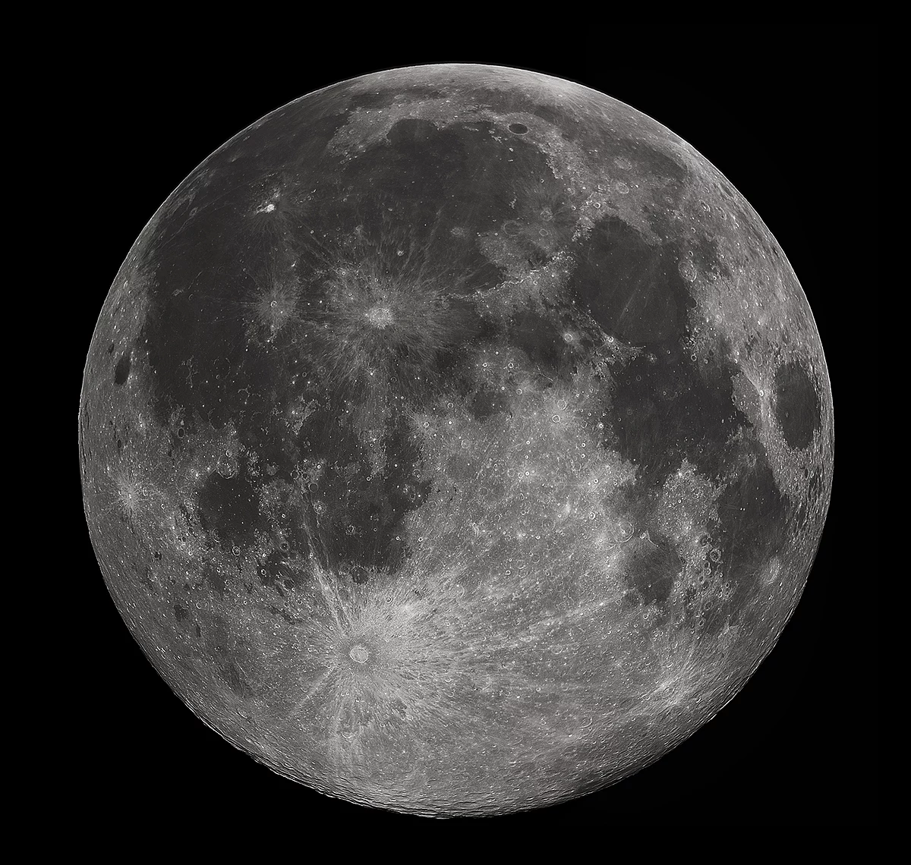

Our Moon

This website will talk about the history of the Moon from our perspective and showcase images of the Moon in a small gallery, both how we've depicted it and images we've taken ever since leaving our home planet. The Moon has been in our skies for as long as any of us can remember. It holds many ancient craters that have been there for billions of years alongside seas of cooled down hardened magma. Without the Moon, our tides would be chaotic, our seasons would become more extreme, and we would lose our biggest opportunity for further space exploration, as the Moon truly dictates many aspects of our lives even if we don't realize it.